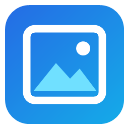
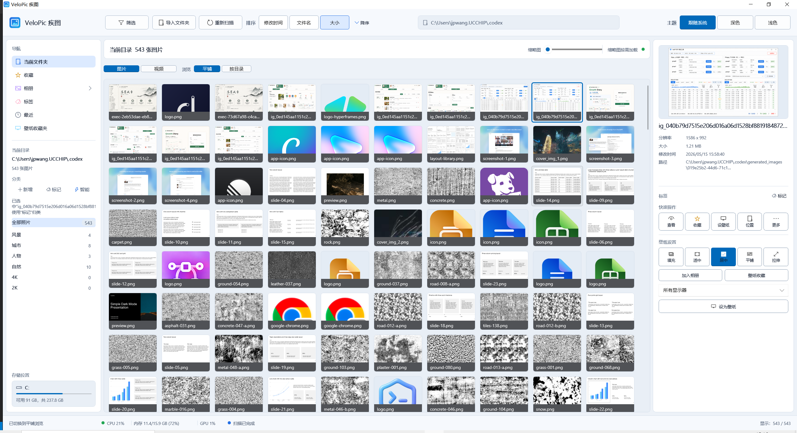

递归扫描
主动重新扫描目录，一次识别常见图片与视频格式，无需重复导入。

VeloPic 疾图Windows 本地媒体工作台
一次扫描图片与视频，平铺或按目录浏览，再完成离线智能分类与壁纸整理。
一套界面，覆盖完整浏览流程
选择一个能力，查看它在 VeloPic 工作台中的位置。

虚拟化网格按需加载缩略图，平铺模式全局浏览，按目录模式可逐组折叠。
从导入到整理
主动重新扫描目录，一次识别常见图片与视频格式，无需重复导入。
按文件名、分辨率、类型筛选，并按时间、名称或大小进行持久化排序。
图片支持缩放平移，视频支持原生控制条；方向键切换，按 Esc 返回图库。
用收藏、相册、自定义分类和壁纸收藏夹组织图片，不移动原始文件。
内置轻量 ONNX 模型，在本机辅助识别风景、城市、人物与自然图片。
先预览填充、适中或居中效果，确认后再设置为 Windows 桌面壁纸。
媒体留在你的电脑里
扫描、筛选、播放、收藏、相册和智能分类都在本地完成。VeloPic 保存的是文件路径与整理状态，不创建媒体副本，也不依赖云端大模型服务。
开源 Windows 应用
项目基于 .NET 8、WinUI 3 和 Windows App SDK 2.2，仓库中包含构建脚本与核心回归测试。
前往 GitHub 仓库PS D:\code\VeloPic>
.\scripts\run-velopic.ps1